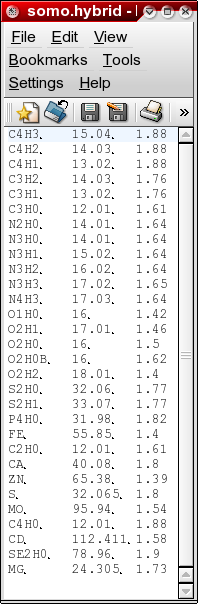

|
Manual
|
SOMO - Add/Edit Hybridization Lookup Table Module:

In this file you need to list all
hybridizations (as defined in Tsai et al., J. Mol. Biol. 290:253-266, 1999)
that will be used for the definitions of all atoms. Each hybridization
requires a name, a molecular weight (given by the sum of the mw of the
atom being defined plus that of the hydrogen atoms bound to it) and a radius
(in Angstrom units). In addition, the neutron scattering length in H2O,
the number of exchangeable protons, and the total number of electrons are entered
in this module, because they are needed by the SAXS/SANS simulator module. Load the hybridization
file first if one exists, and then the SAXS Coefficients File. This is required because
the hybridization table contains also the atom identifiers linking each atom type to its X-ray
scattering coefficients.
-
The first field (Number of Hybridizations in File:) lists the existing
hybridizations, and you can select one from the pull-down list. The format is usually
"atom-number of bonds-H-number of hydrogens" (e.g. C4H3). The selected hybridization
can then be edited by entering the appropriate parameters in the other fields. To enter
a new hybridization, go to the Hybridization Name: field (see below).
-
The second field (Number of SAXS Entries in File:) lists the SAXS coefficient
identifiers present in the relative file, which are associated with the existing hybridizations.
An identifier can also be selected using the pull-down list to associate it with a new hybridization.
-
A new hybridization can be entered in the Hybridization Name: field. The
format is usually "atom-number of bonds-H-number of hydrogens" (e.g. C4H3).
-
Edit/enter the molecular weight (given by the sum of the mw of the atom being defined plus
that of the hydrogen atoms bound to it) in the Molecular Weight: field.
-
Edit/enter the atomic radius (in Angstrom units) in the Radius (A): field. This is
the anhydrous radius used in the Accessible Surface Area (ASA) computations.
-
Edit/enter the neutron scattering length in H2O (in 10-12 cm units)
in the Neutron scattering length in H2O (10-12 cm): field.
This parameter will be used in the SANS P(r) vs. r computations.
-
Edit/enter the number of exchangeable protons in the Total number of electrons: field.
This parameter will be used in the SAXS P(r) vs. r computations.
-
Edit/enter the total number of electrons in the Number of exchangeable protons: field.
This parameter will be used in the SANS P(r) vs. r computations.
After editing is completed, the updated table can be saved by clicking on
"Add Hybridization to File"
www contact: Borries Demeler
This document is part of the UltraScan Software Documentation
distribution.
Copyright © notice.
The latest version of this document can always be found at:
http://www.ultrascan.uthscsa.edu
Last modified on January 27, 2010.